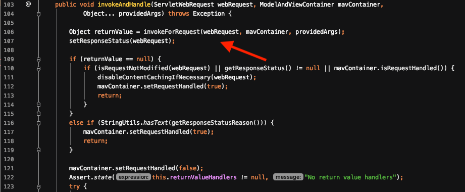
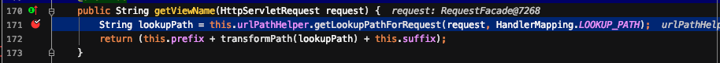

文章首发于先知: 前段时间参加了WCTF2020比赛，当时主要是通过盲测的方式找到了正确的payload，但是对于网上出现的多种payload形式并不了解其原因，因此有了这篇文章。
根据网上出现的payload以及比赛中用到的payload，一共有以下3种。
1 | __${xxx}__::.x |
Thymeleaf这道题采用的环境是Spring+Thymeleaf，当web应用基于spring，Thymeleaf使用SpEL，否则使用OGNL。
前置知识: 预处理
Thymeleaf模版引擎有一个特性叫做表达式预处理(Expression PreProcessing)，置于__...__之中会被预处理，预处理的结果再作为表达式的一部分继续处理。举例如下:
1 | #{selection.__${sel.code}__} |
解析过程分析
01. 获取view
当访问一个api时，spring与Thymeleaf是如何配合的呢？首先定位到org.springframework.web.servlet.DispatcherServlet#doDispatch()，这是都会经过的一个点。
在该函数中获取ModelAndView对象，看图中的两行代码，会经过2个过程。
- ha.handle()
- applyDefaultViewName()
首先来看第一个过程，跟进handle()方法，直接跟进到org.springframework.web.servlet.mvc.method.annotation.RequestMappingHandlerAdapter#handleInternal()
这里可以看到mav的获取方法，跟进invokeHandlerMethod()，直接跟进到invokeAndHandle()。

这里的returnValue是否有值，决定了2种类型的payload。returnValue的获取会invoke此Request对应的函数获取返回值，例如下面这个例子访问/path时，获取return的值为user/{lang}/welcome作为ModelAndView的view值。
1 | @GetMapping("/path") |
但如果例子是下面这样的呢？此时ModelAndView的view值为null。
1 | @DeleteMapping(value = "/{username}") |
接着往下来到第二个过程，跟进applyDefaultViewName()。
在这里，若ModelAndView对象中的view不为空，则啥也不做，否则会获取DefaultView作为View。来看看defaultview是如何获取的。跟进getDefaultViewName()，继续跟进viewNameTranslator.getViewName()。

在该方法中首先获取uri的path值，然后进入transformPath()方法，最后和prefix以及suffix进行拼接，即为ViewName。跟进transformPath()。
在这里会去掉前后的/，它会将.及之后的内容当作扩展名，会截掉.以及之后的内容。因此，这种情况下需要在payload后增加一个.以保证payload内容完整。
02. 解析表达式
获取到view后，接着往下跟进processDispatchResult()。
继续跟进render()。
首先获取viewName，然后调用resolveViewName()，选择bestView，这里的往往会返回ThymeleafView，保持了和view一样的值。然后接着往下，调用了view.render()，即ThymeleafView.render()。跟进。
继续跟进renderFragment()。
在这里会判断viewTemplateName是否包含::，然后调用IStandardExpressionParser.parseExpression()解析~{viewTemplateName}表达式。
继续调用parseExpression()。
这里首先调用preprocess对__${}__里的内容进行预处理，结果存入 preprocessedInput，然后调用Expression.parse()进行第二次解析表达式。
在第一次处理时，只要__${}__里面的语法正确，是一定会被执行的。执行完的第二次表达式解析是否正确就不一定了。如果第二次执行失败，则会显示原来的viewTemplateName值，而没有回显，但事实上已经执行了恶意语句。影响第二次执行失败与否与~{}里的语法格式有关。
当~{}中出现::，其后面需要有值。
场景分析
01. 场景一
__${}__:: 在使用veracode-research的环境时，这种类型的payload确实能够成功。这和它一开始获取到的view有着很大的关系。
像上图的这种，拼接后的结果为~{user/__${}__::/welcome}，第一次解析后的结果为~{user/xxx::/welcome}这样的完全是合法的语法。
__${}__::.x 是veracode-research在示例中展现的payload，能成功，但是不需要.x也能成功。
02. 场景二
__${}__::x. 是在wctf中用到的payload，由于是void类型，在获取view时，是使用了path值，并截掉了.及之后的内容。因此需要在::后面有值且在最后有一个.。
03. 场景三

显而易见，这种情况下不需要::，但是结尾需要.。
04. 场景四
这种情况下，不能成功。因为它设置了@ResponseBody，在这种情况下，sring会将return的值作为响应内容，而不是模版。
05. 更多场景
还有多种场景可自行分析……
小结
综上，在一个spring+thymeleaf的应用中，进行模版注入需要分析当前的场景，然后才能判断是否有漏洞，在做检测时比较难。比较通用的payload形式为__${}__::x.，有回显。在无回显的情况下，只要保证__${}__里的语法正确，以及整个viewTemplateName中包含::即可，无论::的位置在哪儿都行。